| 日付 | 2024年1月27日（土） - 2024年1月28日（日） |
|---|---|
| メンバー | 家族（妻、長女・12歳、長男・10歳） |
| アクセス | 車 |
今シーズンのスキーの第一弾は苗場スキー場。
来場者数上位常連の非常に有名なスキー場だ。
苗場プリンスホテルに泊まってみたかったが、
予約が埋まっていたために近くの宿の予約を取って出発だ。
1日目
苗場スキー場に到着。本日は曇りだ。
まずは緩斜面で何本か滑る。
本日は妻が体調不良で宿で待機のため、3人で滑る。
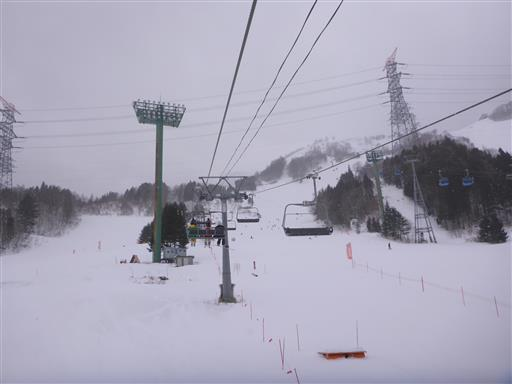
続いてゴンドラに乗る。ゴンドラはスキー板を脱いで運ばなければいけないが、
速く高いところまで行けるのと、寒くないのがありがたい。
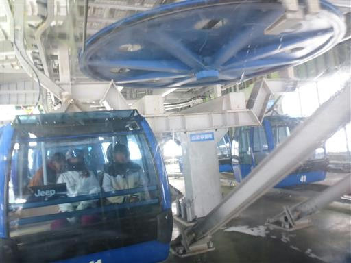
ゴンドラを降りたら、リフトでさらに上に向かう。
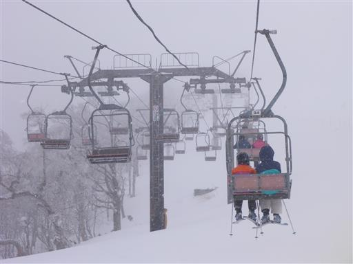
周囲は霧氷が広がっているが、残念ながら背景が真白だ。
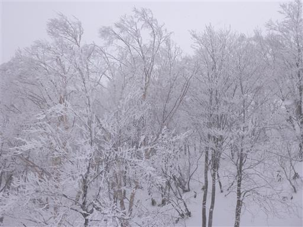
昼前にスキー場に到着したため、最上部から滑り降りたら昼食の時間。
賑わっているが大混雑というほどではない。
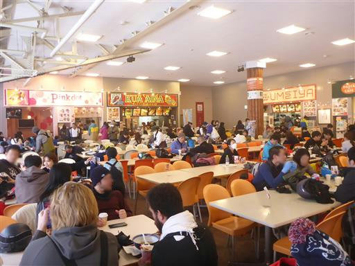
午後からは雪が降ってくる。
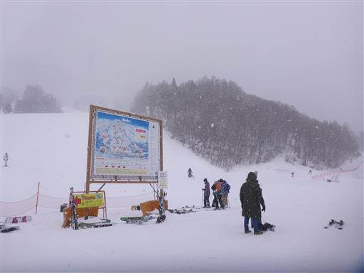
夕方になると青空が出てくる。天気が目まぐるしく変わる。
背後に見えている白い山は、かつて登った平標山だ。
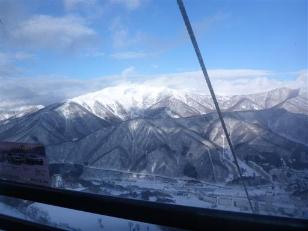
眼下に苗場の町を見下ろす。手前にずらっと並んでいるのが苗場プリンスだ。
その奥にも多くのホテルが建っている。
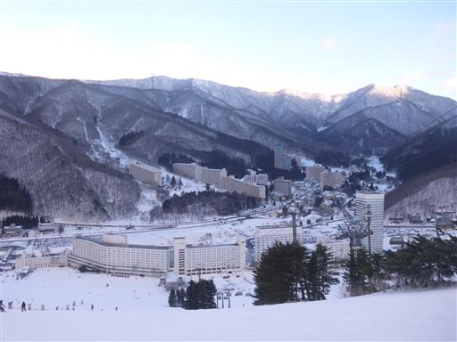
夕方までスキーをしたら宿に戻る。
目の前に別館が建っているため、部屋からの景色はあまりよくない。
ナイター営業しているスキー場がわずかに見えている。
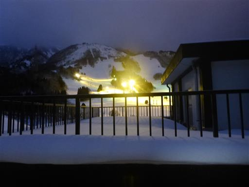
夜9時になると花火が上がる。苗場ならではだ。
これも別館に隠されて花火の上半分しか見えない。
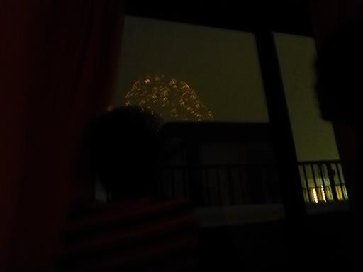
2日目
1泊お世話になった宿「ティアン」をチェックアウト。荷物は置かせてもらえる。
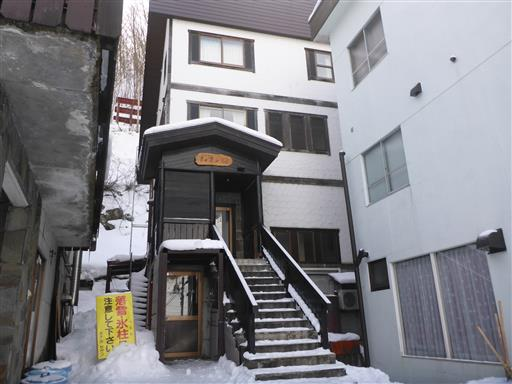
宿の前で雪玉遊び。
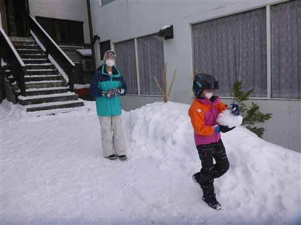
本日は家族4人で滑る。スキー場の最上部が見えている。
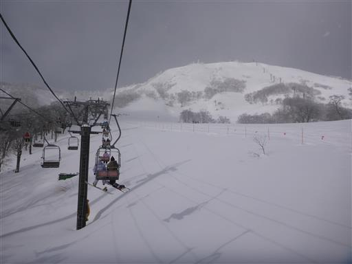
雪が舞っているが青空も見える。
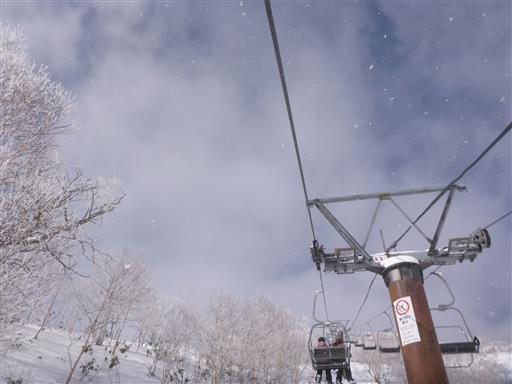
今日も平標山がきれいだ。
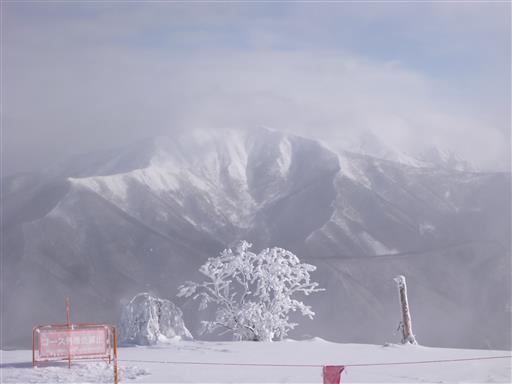
青空が出てくる。ゴンドラから眺める樹氷が美しい。
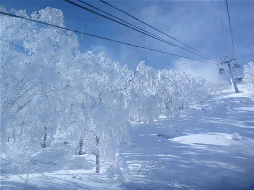
15時過ぎに撤収。スキー場ではまだまだ多くの人が滑っている。
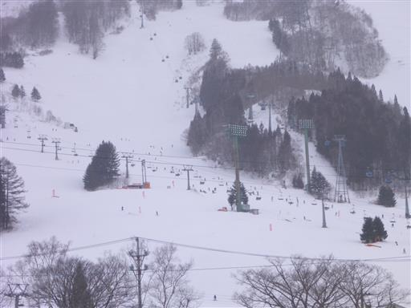
苗場スキー場を後にする。
比較的交通の便が良く、様々なコースがある、楽しいスキー場だった。
次回は苗場プリンスに泊まってみたい。
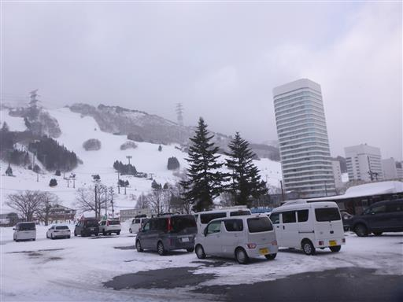